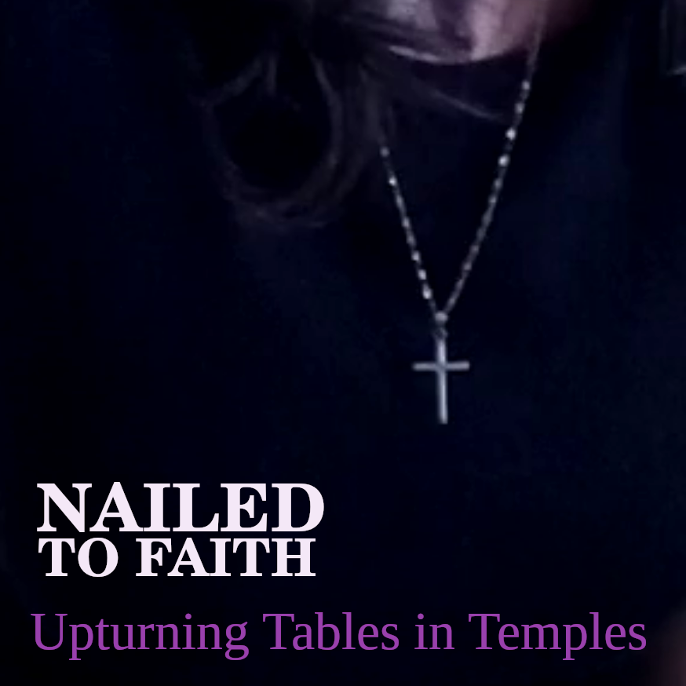

Upturning Tables in Temples (3 track EP)
3 (free to use) original tracks by NTF

1) Christ The Redeemer (feat. Húmeh) by NTF
© 2026 Paula Jane Green
📥 Download this track on Bandcamp (Free or name your own price)2) Crippled on the Cross (feat. Húmeh) by NTF
© 2026 Paula Jane Green
📥 Download this track on Bandcamp (Free or name your own price)3) The Morning Star (feat. Húmeh) by NTF
© 2026 Paula Jane Green
📥 Download this track on Bandcamp (Free or name your own price)NAILED TO FAITH FREE MINISTRY MUSIC LICENSE
Copyright © 2026 Paula Jane Green
All rights reserved.
The musical compositions, lyrics and sound recordings contained in this release remain the intellectual property of Paula Jane Green and/or Nailed To Faith.
The purpose of this license is to encourage the free use of this music for: independent content creators, independent filmmakers, charitable projects, personal projects, YouTubers, churches, Christian ministries, Christian organisations, Bible study groups, mission organisations, Christian schools, education, testimony, independent creative projects, evangelism and the promotion of Christian teaching, while preventing commercial exploitation by third parties.
This music is registered with the United States Copyright Office (eCO Portal) in order to verify ownership, and to protect the work from corporate exploitation.
PERMISSION GRANTED
You may use this music (in part or in full) free of charge for: podcasts, YouTube channels, independent content creation, independent filmmaking, charitable projects, personal projects, churches, Christian ministry, all Christian organisation, Bible study groups, mission organisations and Christian schools.
Monetised YouTube videos, podcasts and independent productions are permitted.
No royalty payments are required.
No licensing fee is required.
Attribution is required.
ATTRIBUTION
At minimum, credits should include:
♦ Full song title (including featured artist)
♦ NTF (Nailed To Faith)
♦ https://nailedtofaith.com
Where practical, these credits should appear in video descriptions, film credits, podcast notes, website credits or printed programmes.
To avoid automated copyright strikes in YouTube, please contact admin@nailedtofaith.com for YouTube whitelisting.
PERMITTED USES
This music may be streamed, downloaded, shared, incorporated into videos, films, church productions, podcasts and synchronised with visual media, provided the use complies with this licence.
EXCERPTS AND PARTIAL USE
Permission is granted to use excerpts, portions or segments of these recordings, provided attribution is maintained, the use complies with this licence, the lyrics are not altered and ownership is not misrepresented.
DERIVATIVE WORKS AND LYRICS
You may:♦ Perform these songs yourself
♦ Record your own vocal performance
♦ Create cover versions
♦ Use instrumental versions provided by Nailed To Faith
♦ Synchronise the music with films, documentaries and visual media
♦ Use all or part of a recording in a larger production
You may NOT:
♦ Alter the lyrics
♦ Rewrite the lyrics
♦ Replace portions of the lyrics
♦ Create modified versions of the lyrics
♦ Create parody versions of the lyrics
♦ Translate the lyrics into another language without written permission
Any public performance or recording of these songs must preserve the original lyrical content.
PROHIBITED USES
1. Corporate Advertising
You may not use this music in commercial advertisements, corporate marketing campaigns, product endorsements or political advertising without written permission.
2. Sale Of The Music
You may not resell the music, license the music to others for payment, claim ownership of the music, upload the music to streaming services under your own name or distribute the music as part of a commercial music library.
3. Copyright Claims
You may not register copyright in this music, submit copyright claims against legitimate users or use automated systems to claim ownership of this music.
4. Misrepresentation
You may not imply that NTF, Nailed To Faith or Paula Jane Green endorses your organisation unless written permission has been given.
MORAL USE REQUIREMENT
This music may not be used in material that promotes violence, hatred, unlawful activity, deliberate deception or religious hostility.
OWNERSHIP
This licence grants permission to use the music in part or in full. Ownership remains with Paula Jane Green and Nailed To Faith. No transfer of copyright occurs.
REVOCATION
Any use that violates this licence automatically terminates the permissions granted by this licence.
CONTACT
To contact us, please email: admin@nailedtofaith.com
Donations are appreciated and will keep us making music for you to freely use.
(see the contact page for details)